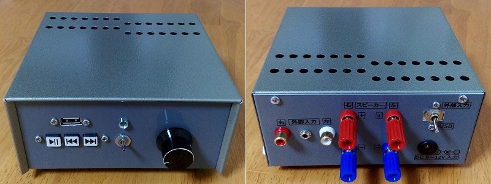
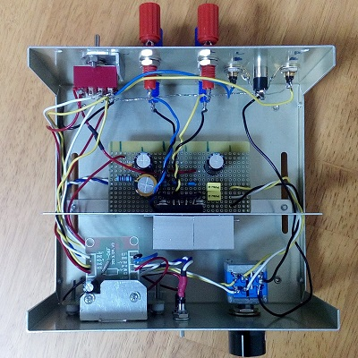

TDA1552Q オーディオアンプ
2016年05月03日 カテゴリー：ヘッドフォンアンプ・その他アンプ

今回はギターアンプではなくオーディオアンプを作製しました。外付け部品が少ないTDA1552QというICを使っています。回路はデータシートの通りで、特に工夫するところもなく簡単です。
中身は下写真です。

ケースは摂津金属工業のメタルケースUT-3というものです。仕切り板が付属し、放熱穴があるのはよいのですが、取り付け済みのプラスチックの足が取り外せないというのがよろしくありません。色合いもイマイチでした……
当初はUSB充電しながら普通のmp3プレーヤーを使う予定でした。しかし電源をアンプと共用にすると、mp3プレーヤーの液晶からサーという大きなノイズが入り込んでしまいます。電池駆動でもダメだし、3端子レギュレータを使ってもダメなようです。
仕方なくUSBメモリから音楽を再生できるmp3プレーヤーを内臓しました。aitendoの極小MP3モジュール[MP3-SB-06F]という製品です。このmp3プレーヤーからもブツブツというノイズが少し発生していますが、まぁ問題ない程度です。
TDA1552Qはカーステレオ向けのICのようですが、音質は特に問題ないと思います。もう少し安くて手に入りやすければいいですね。